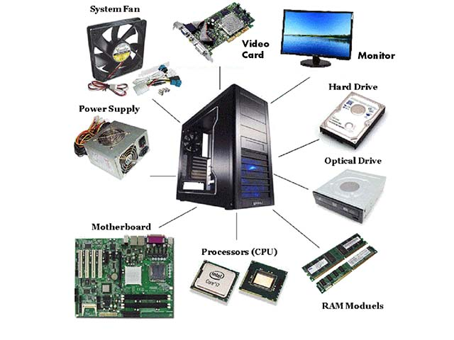
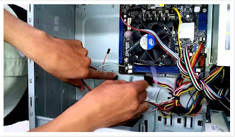

การประกอบเครื่องคอมพิวเตอร์

การประกอบเครื่องคอมพิวเตอร์
คู่มือการใช้งาน เป็นเอกสารที่ผู้ผลิตแนบมาพร้อมกับผลิตภัณฑ์ที่ซื้อ เช่น คู่มือ เมนบอร์ด และ คู่มือซีพียู โดยก่อนลงมือประกอบเครื่องทุกครั้ง ควรอ่านและทำความเข้าใจรายละเอียดเกี่ยวกับคำแนะนำต่างๆ ในคู่มือให้เข้าใจเสียก่อน ซึ่งภายในคู่มือนอกจากจะอธิบายถึงรายละเอียดเกี่ยวกับผลิตภัณฑ์รุ่นนั้น แล้ว ยังระบุถึงวิธีการตั้งค่า การติดตั้งอุปกรณ์อย่างถูกวิธีข้อห้ามและข้อปฏิบัติต่างๆ

ขั้นตอนการประกอบเครื่อง สามารถแบ่งออกเป็น 11 ขั้นตอนด้วยกัน คือ
1.เตรียมเคสคอมพิวเตอร์
2.ติดตั้งซีพียู
3.ติดตั้งแผงหน่วยความจำ
4.ติดตั้งเมนบอร์ดลงในเคส
5.เชื่อมต่อปลั๊กและสวิตช์ต่างๆ
6.ติดตั้งฮาร์ดดิสก์
7.ติดตั้งเครื่องขับดีวีดี
8.ติดตั้งเครื่องอ่านการ์ดหน่วยความจำ (ถ้ามี)
9.ติดตั้งอะแดปเตอร์การ์ด (ถ้ามี)
10.ปิดฝาเคส
11.ทดสอบการใช้งาน
เนื่องจากการประกอบเครื่องเป็นการดำเนินกับอุปกรณ์อิเล็กทรอนิกส์ ดังนั้น ในระหว่างการดำเนินงานควรเรียนรู้ การป้องกันความเสียหายของอุปกรณ์ในระหว่างการประกอบเครื่อง ได้แก่
1. ไฟฟ้าสถิต อาจส่งผลการเสียหายต่ออุปกรณ์อิเล็กทรอนิกส์ได้ ดังนั้น ในระหว่างการประกอบเครื่อง การได้นำอุปกรณ์ป้องกัน เช่น ชุดสายรัดข้อมือป้องกันไฟฟ้าสถิตหรือถุงมือป้องกันไฟฟ้าสถิตมาใช้ ถือเป็นการป้องกันที่ดี
2. ในการประกอบเครื่องและการติดตั้งอุปกรณ์ต่างๆ จะเกี่ยวข้องกับอุปกรณ์ที่มีความแข็ง มีน้ำหนัก และมีความคม ดังนั้น ในระหว่างการติดตั้ง ต้องระมัดระวังในเรื่องการครูด หรือการกระแทกบนอุปกรณ์บนเมนบอร์ดอย่างแรง ซึ่งอาจส่งผลต่อลายวงจรเมนบอร์ดได้
3. การยึดแผงเมนบอร์ดเข้ากับตัวถังเครื่อง ควรขันสกรูให้พอรู้สึกตึงมือ ไม่ควรขันแน่นจนเกินไป
4. สายสัญญาณ สายไฟ และขั้วต่อปลั๊กไฟต่างๆ ภายในเคส จะต้องถูกรวบและรัดให้เป็นระเบียบ เพื่อป้องกันการเข้าไปขัดกับใบพัดของพัดลม และบดบังทิศทางการระบายอากาศ
5. ระวังอย่าให้มีเศษวัสดุที่มีคุณสมบัติเป็นตัวนำไฟฟ้า หล่นอยู่บนเมนบอร์ดในขณะประกอบเครื่อง
คลิปสอนประกอบคอมพิวเตอร์
อ้างอิง
https://sites.google.com/site/busdyza001452/bth-thi-3-kar-prakxb-kheruxng-khxmphiwtexr
|